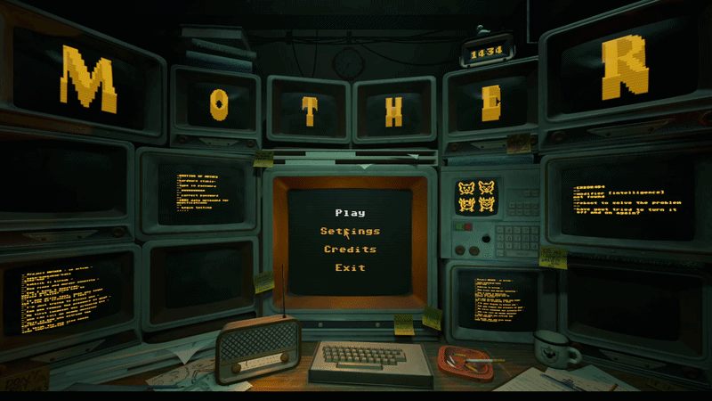

M0THER
Camera rotations and raycasts who could've thought it would be such a nightmare.

Overview
Inspired by games like Lemmings and Portal, M0THER will have you watchfully guiding adorable little critters by giving them crazy abilities! Guide your idiot children through the death maze of the testing facility! The subjects make up for idiocy in cuteness.. But that does not generally do much for them when getting shredded.
Visit Itch.io page!Technical Breakdown
Main Menu
Despite being a core feature in every game, we decided not to spend too much time on the main menu until the very end of the project. It was at that point that we decided we should have an interactive 3D main menu.
I decided to take on the challenge of creating it since I had already been working on a lot of features involving raycasts, such as the cameras and traps.
So how did I go about making the main menu? I reused some of my previous camera code and placed it into our temporary main menu. We already had a 3D scene with several screens, so I just needed to give them collision shapes and make sure my raycast from the camera in the main menu scene was looking for that collision layer.
Once that was done, I had to find a way to work with the materials on the screens so they could go from being a black screen with some orange text to actually showing the levels.
Luckily for me, the artists on the team had set up the TVs with two textures. One of the textures was specifically for the screen, which was exactly what I needed. I took that one and created my own material with a simple PNG of the level, except it had to be rotated 90 degrees due to how the normals on the screen were set up.

Cameras and Traps
When we started the project, I immediately knew what I wanted to work on. That was the camera system, as I had already been in contact with the person who was going to pitch the game and really liked how the camera system worked.
Translating his vision of the cameras into Godot felt like a good challenge.
I knew the game was going to have a somewhat “hackery” feeling, with hacking cameras and traps being the main focus, so I started by looking at examples of how different hacker games handle their camera systems.
After that, I created a small blockout level where cameras were positioned behind different obstacles to imitate the walls that would appear in our levels. I experimented with different collision boxes on the cameras so that if a camera was slightly outside of the raycast it could still be detected.

While doing this, I was also told that we should have a transition effect similar to the one used in Watch Dogs when switching between cameras.
So I started looking at Godot shaders
to find a shader that could meet our needs.
I managed to find a simple shader that detected the edges of objects in the scene and highlighted them with a color. I then modified it so that the shader would also darken the screen while still allowing the highlights to remain visible.
Once the visual style of the shader was agreed upon, I began implementing it. I assigned the shader to the cameras and exposed some variables so I could access them through GDScript. I then added a tween that gradually enabled and disabled the shader effect so the transition wouldn't feel instantaneous.

Weeks passed and we kept the camera transition effect mostly the same until one night when another programmer on the team decided to take a look at the transition shader and made a “few” tweaks.
While I was initially against the changes, I eventually grew to like them.
Around the same time, I was working on a highlight system for selecting different cameras and traps in the map. I struggled for a while because the camera model consisted of two separate parts, but after experimenting I found a way to affect both.
The solution was to modify the camera's cull_mask so that when the player hovered over a camera, another layer would become visible. On that layer we rendered a special shader that displayed the selection highlight.
Modification Wheel
After finishing the camera system, the next task was the selection wheel. This wheel allowed us to avoid binding every modification to a different keyboard key, which would have made controller support more difficult.
After discussing it with the team, we decided this was the best approach.
The wheel is used to select which modification to apply to the creatures running around the map.
We draw the wheel entirely using Godot's _draw() function because it allows us to limit how often it needs to update. Instead of constantly checking every frame, we only redraw when something changes.
For example, if we add an arrow or move the cursor over a different segment of the wheel, we call queue_redraw(). This redraws the UI only when needed and places the icons and indicators in the correct position.
It turned out to be a very performant way of handling the system, and I'm glad I discovered it early in development.

What I Learned
Working on M0THER taught me a lot about building gameplay systems that combine technical implementation with user experience. Developing the camera system required careful use of raycasts, collision layers, and camera logic to ensure players could reliably select cameras and traps even when objects were partially obscured by level geometry.
I also gained experience working with shaders and integrating them into gameplay systems. By modifying a shader and exposing parameters to GDScript, I was able to create a smooth transition effect when switching between cameras. This process helped me better understand how rendering effects and gameplay code can work together to improve visual feedback.
Another key takeaway was the importance of building flexible UI systems. Implementing the modification wheel using Godot's _draw() function allowed the UI to update only when necessary, which made the system both efficient and easy to expand with additional abilities later in development.
Overall, this project improved my ability to prototype systems quickly, iterate based on team feedback, and balance technical solutions with the needs of game design and usability.